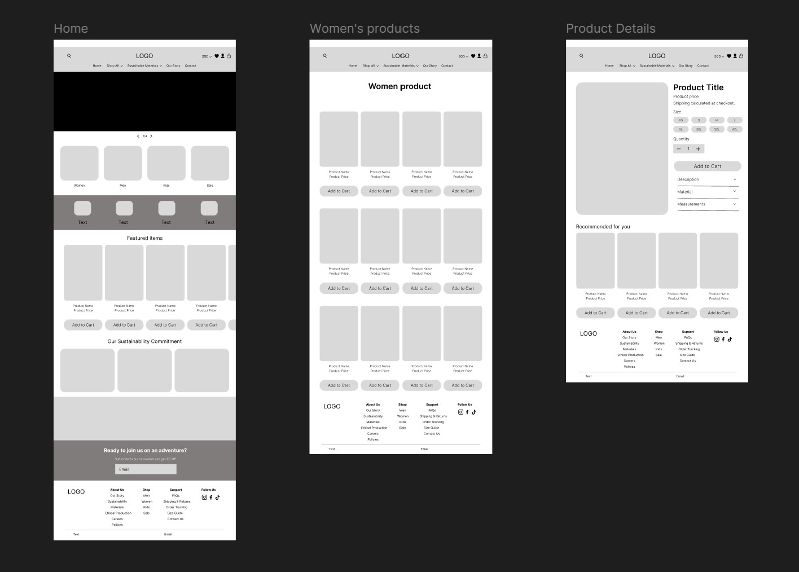
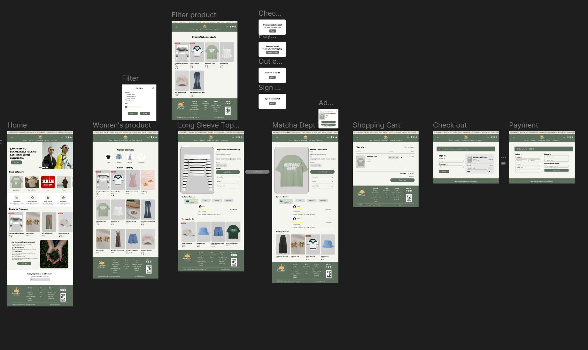

This project involved designing a high-fidelity UI/UX prototype for a sustainable fashion e-commerce platform. The goal was to create an intuitive shopping experience that promotes eco-friendly products while reinforcing trust, transparency, and a modern sustainable brand identity. The design balances aesthetics with usability to guide users seamlessly from product discovery to checkout.
The prototype includes interactive elements such as hover states, clickable product cards, and smooth transitions between screens. These interactions help simulate a real shopping experience and demonstrate how users would navigate the platform with minimal friction.


This project strengthened my ability to translate brand values into a functional digital experience. I gained hands-on experience in designing user-centered e-commerce flows and learned how visual consistency and interaction design can significantly impact user engagement and trust.